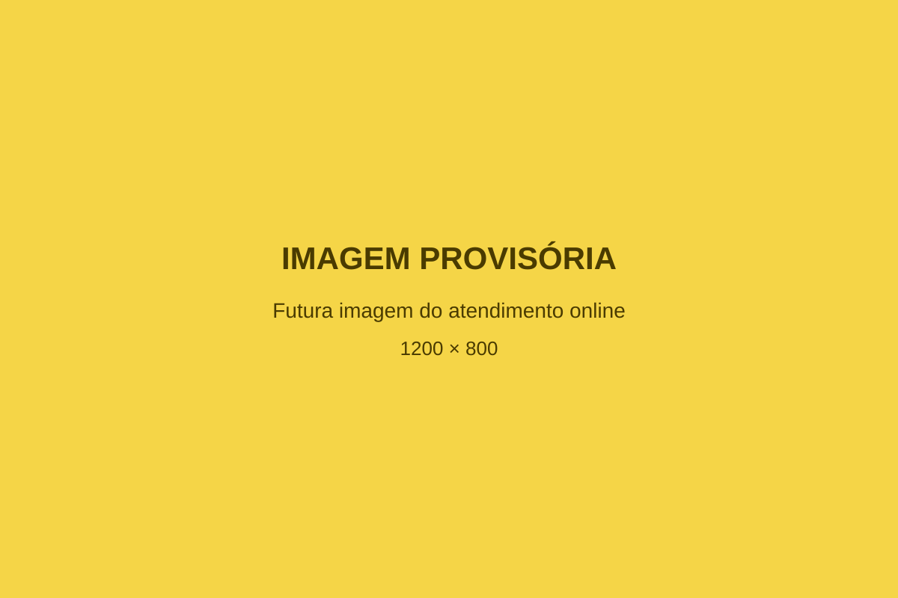

Acompanhamento
Um cuidado construído ao longo do tempo.
Saúde e longevidade não dependem de uma decisão isolada. O acompanhamento permite observar necessidades, organizar objetivos e ajustar o caminho conforme cada momento.
Mais do que uma consulta isolada.
O acompanhamento propõe uma visão contínua, na qual diferentes informações podem ser observadas ao longo do processo. A intenção é construir orientações compatíveis com a realidade, os objetivos e o momento de cada pessoa.
O acompanhamento é organizado de forma individualizada, considerando as necessidades, os objetivos e o momento de cada pessoa.
Um acompanhamento pensado para diferentes momentos da vida.
A proposta poderá atender pessoas que desejam olhar para a saúde de forma mais ampla, compreender melhor sua rotina e construir hábitos sustentáveis ao longo do tempo.
-
Cuidado preventivo
Para quem deseja prestar mais atenção à saúde antes que pequenas dificuldades se tornem maiores.
-
Saúde e qualidade de vida
Para quem procura mais disposição, autonomia e equilíbrio no dia a dia.
-
Organização da rotina
Para quem precisa transformar orientações em ações possíveis dentro da sua realidade.
-
Alimentação mais consciente
Para quem deseja compreender melhor escolhas alimentares e sua relação com a saúde.
-
Movimento e autonomia
Para quem reconhece a importância da força, da mobilidade e da atividade física ao longo da vida.
-
Acompanhamento da evolução
Para quem valoriza observar o processo, reconhecer avanços e ajustar estratégias.
Como o acompanhamento poderá funcionar
Cada etapa contribui para construir um processo mais organizado, consciente e alinhado à realidade do paciente.
-
Primeiro contacto
O paciente entra em contacto pelo WhatsApp para receber informações e esclarecer dúvidas iniciais.
-
Avaliação individual
A história, a rotina, as necessidades e os objetivos são considerados para compreender o momento atual.
-
Planeamento
As orientações são organizadas de maneira individualizada e compatível com a realidade do paciente.
-
Aplicação na rotina
O paciente coloca as orientações em prática no dia a dia, respeitando suas possibilidades e limites.
-
Acompanhamento da evolução
O processo é observado ao longo do tempo, com apoio de informações e registros relevantes.
-
Reavaliação e ajustes
As estratégias podem ser revistas conforme a evolução, as dificuldades e os novos objetivos.

Acompanhamento online, com proximidade e organização.
O formato online oferece mais praticidade para integrar encontros e orientações à rotina, mantendo um processo organizado e uma comunicação clara ao longo do acompanhamento, mesmo à distância.
Agendar avaliação pelo WhatsAppDiferentes áreas, uma visão conectada.
A proposta de longevidade considera que saúde, alimentação, movimento e hábitos fazem parte da mesma rotina. O acompanhamento procura organizar esses elementos de forma coerente e individualizada.
Tecnologia como apoio ao acompanhamento.
O EvoLift poderá auxiliar o paciente no registro de exercícios, cargas e evolução, permitindo uma visão mais organizada do processo ao longo do tempo.
O aplicativo funciona como ferramenta de apoio e não substitui consulta, diagnóstico, orientação ou avaliação profissional.
O que você pode esperar dessa proposta
Um acompanhamento baseado em clareza, individualidade e construção responsável ao longo do tempo.
-
Escuta e atenção à individualidade.
-
Orientações apresentadas com clareza.
-
Objetivos compatíveis com a realidade.
-
Observação do processo ao longo do tempo.
-
Ajustes responsáveis quando necessários.
O acompanhamento não substitui serviços de urgência ou emergência. Em uma situação urgente, procure os serviços de saúde adequados da sua região.
O primeiro passo pode começar com uma conversa.
Entre em contacto para receber informações sobre a proposta de acompanhamento da Dra. Deyvla.
Agendar avaliação pelo WhatsApp